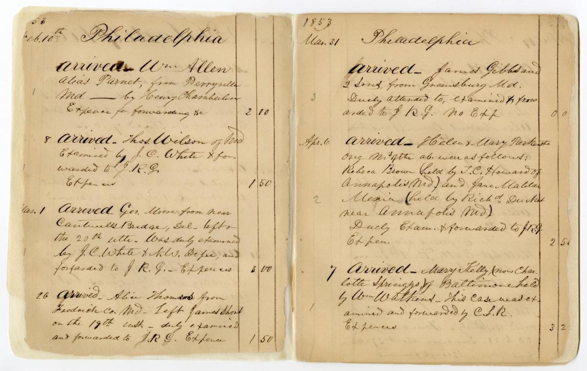

William Still and the Underground Railroad
Born in Burlington County, New Jersey in 1821, William Still was an abolitionist movement leader who assisted hundreds of enslaved Africans in escaping from slavery along the Underground Railroad. The youngest of eighteen children, he was raised by his father, Levin Steel, who purchased his own freedom, and his mother Charity Still, who escaped her enslaver on her second try. Despite established laws prohibiting Blacks, and especially enslaved Africans, from learning to read and to write, out of resistance Still taught himself these skills. He went on to use these skills to document those he helped escape in his self-published book The Underground Railroad, the only first person account of the Underground Railroad written and self-published by an African American. Through his book, we are able to recognize those who he helped and visualize the true impact of his work.
The Underground Railroad
The Underground Railroad began as a series of paths to freedom for those escaping bondage which later became a robust network of resources for enslaved African Americans to gain their freedom. While many freedom seekers began their journey unaided and many completed their self-emancipation without assistance, this network was integral to the successful freedom of countless individuals. Beginning informally, after the Fugitive Slave Act of 1850, the Underground Railroad became deliberate and organized. Despite the illegality of their participation in this network, people of all backgrounds participated in this civil disobedience. Those escaping bondage traveled by land and see, by foot and by vehicle, to locations all over the world--such as Canada, Mexico, Spanish Florida, Indian territory, the West, Caribbean islands and Europe-- in order to gain their freedom. Those who attempted to escape faced great personal risk, as did those who assisted these individuals on their journeys, but they took on this risk in the name of freedom and justice for all.
William Still
William Still was the chairman of Philadelphia's Vigilance Committee, an essential hub of antislavery activity.
Origins
In total, Still helped over 990 individuals from all across the Southern US on their travels along the Underground Railroad.
Timeline
His documentation spans from 1953 through at least 1961.
Transportation
Traveling hundreds of miles, many traveled by foot, steamer, and rickshaw.
Enslavers
Many were escaping the save enslavers, with the top enslaver being ____.
Breakdowns
Of these individuals, XX% were women,...
XX% traveled with children,...
##% were classified as "literate",...
##% were armed,...
XX% had a documented reward posted for their capture,...
and XX% were captured.
Freedom
As a result of his bravery, William Still helped change the lives of countless individuals, and his commitment to learning and documentation allow us to continue to recognize his lasting contributions to our nation's history today.